CS184/284A Spring 2026
Homework 2 Write-Up
|
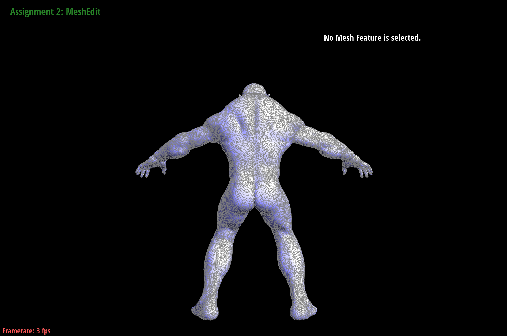 |
Overview
This project aims to implement a 3D rendering pipeline, from creating mathematical spline representations using bezier curves, work with mesh data structure and implement phong shading, basic mesh edit operations like flip edge, split edge and subdivision. Whereas homework 1 focused on the image rasterisation aspects of the graphics pipeline, this homework focuses on the mathematical representation of 3D objects, and generating 3D meshes.
Overall, it was a challenging but rewarding project.
Section I: Bezier Curves and Surfaces
Part 1: Bezier curves with 1D de Casteljau subdivision
Casteljau’s algorithm is a recursive method to generate bezier curves. For an n-degree Bezier curve with n edges, it recursively performs the n subdivisions by taking a linear interpolation between each adjacent control points, until the layer contains only one vertex, in which case it is used to trace out the final positions on the curve.
We implemented the algorithm by first iteratively interpolating across each pair of adjacent control points on one layer. in evaluateStep, we stored the interpolated points in 'intermediatePoints' to be returned at the end of each recursive call. evaluate1D then iteratively calls on evaluateStep to fully trace out the curve in a while loop, feeding the returned intermediatePoints from each step into the next step. Once only one point remains in intermediatePoints, we return it as the final position on the curve.

|
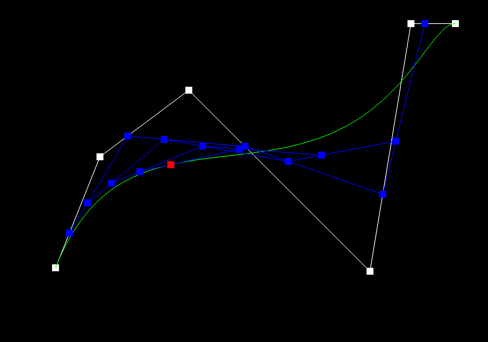 |

|
Since each linear interpolation are parameterised by t, once the subdivisions are done, we can increment through t from 0 to 1, to trace out the final curve.

|

|
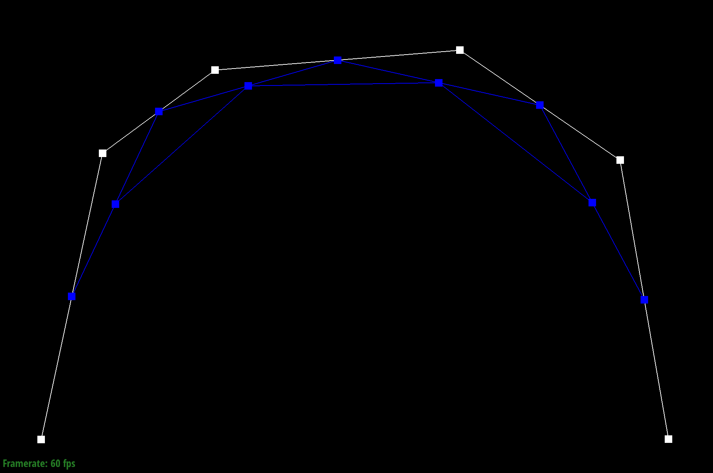 |

|

|

|
Part 2: Bezier surfaces with separable 1D de Casteljau
De Casteljau's algorithm can be extended to generating Bezier surfaces by evaluating the surface in two stages, across parameters u and v. We implemented this using three core functions. First, evaluateStep performs a single level of linear interpolation between points, which evaluate1D uses in a loop to fully evaluate a 1D Bezier curve down to a single point. To evaluate the 2D surface, evaluate(u, v) sweeps along the u-axis by applying evaluate1D to each row of the control point grid, generating a moving set of intermediate control points. Finally, it sweeps along the v-axis by calling evaluate1D one last time on these intermediate points using parameter v to pinpoint the exact 3D surface position.

Section II: Triangle Meshes and Half-Edge Data Structure
Part 3: Area-weighted vertex normals
To compute the vertex normal, we calculate the area-weighted average of the normals of all faces incident to the vertex.
For each neighboring triangle, we compute the cross product of two edge vectors that originate from the vertex (treated as the base point). The resulting vector is perpendicular to the face, and its magnitude is proportional to twice the triangle’s area, which naturally provides area weighting.
We iterate around all half-edges connected to the vertex (equal to its degree), skipping any boundary faces. For each
valid face, we accumulate its area-weighted normal into accum_normals. After summing all such normals, we
normalize the accumulated vector to obtain the final unit vertex normal.
|
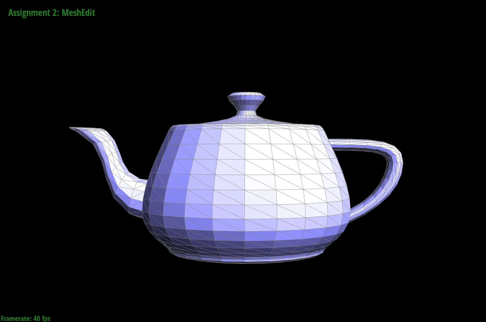 |
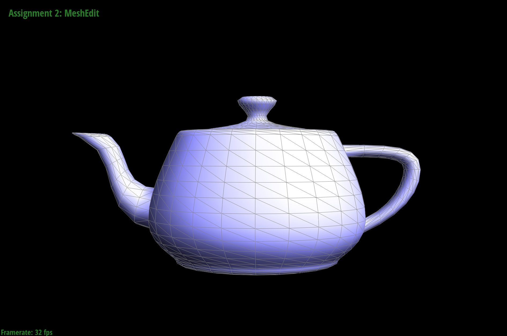 |
Part 4: Edge flip
For this task, we first checked whether the edge is on the boundary. If either of the two adjacent faces was a boundary face, we returned the edge without modifying it.
We then collected all six half-edges involved in the two adjacent triangles, along with their corresponding vertices, faces,
edges, and twin half-edges. Before the flip, the shared edge connected vertices b and c, and the two
triangles were formed by vertices (a, b, c) and (c, b, d).
After identifying all local elements, we reassigned the connectivity of the half-edges. The diagonal edge (b, c)
was replaced with the new diagonal (a, d). We updated each half-edge using setNeighbors(),
modifying their next, twin, vertex, edge, and face pointers so that the
two new triangles became (a, b, d) and (a, c, d).
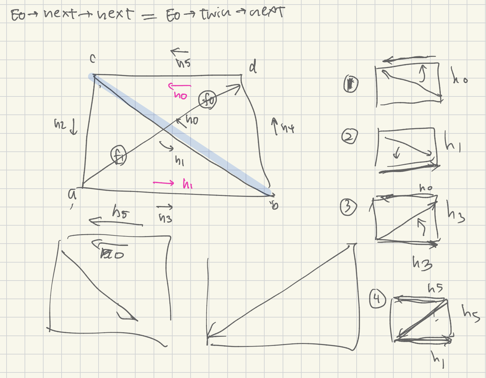
Finally, we updated all local anchors to keep the mesh consistent. We reset the half-edge pointer for both faces, the half-edge pointer for all affected edges, and the half-edge pointer for all four vertices.
DebuggingInitially, we were a little confused about how to traverse half-edges on code, so using the mesh edit GUI tool, we copied down a chunk of triangle meshes with physical address locations, and traced out the program on that. We identified which connections will change, and which pointers will change.
|
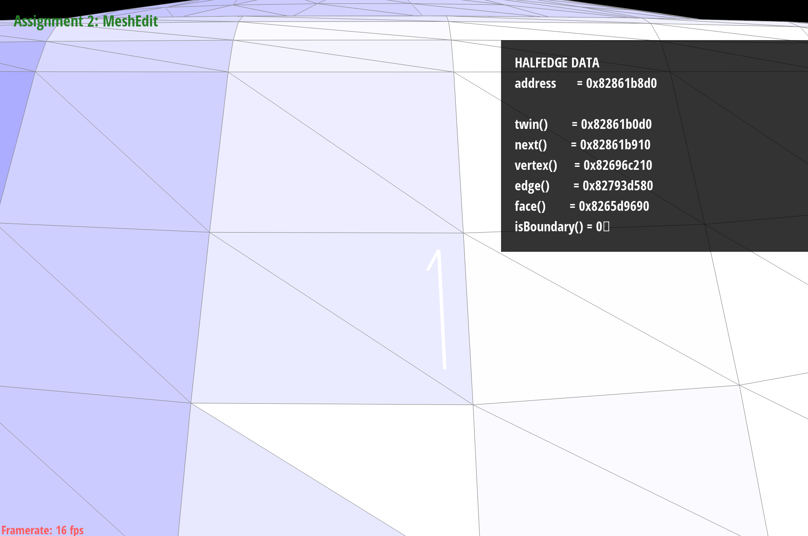 |
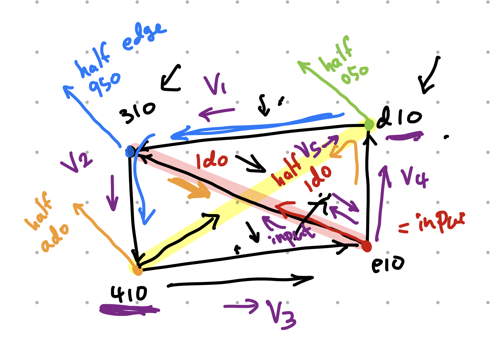 |
After getting past the conceptual and implementation hurdles, we were able to successfully... flip an edge!
|
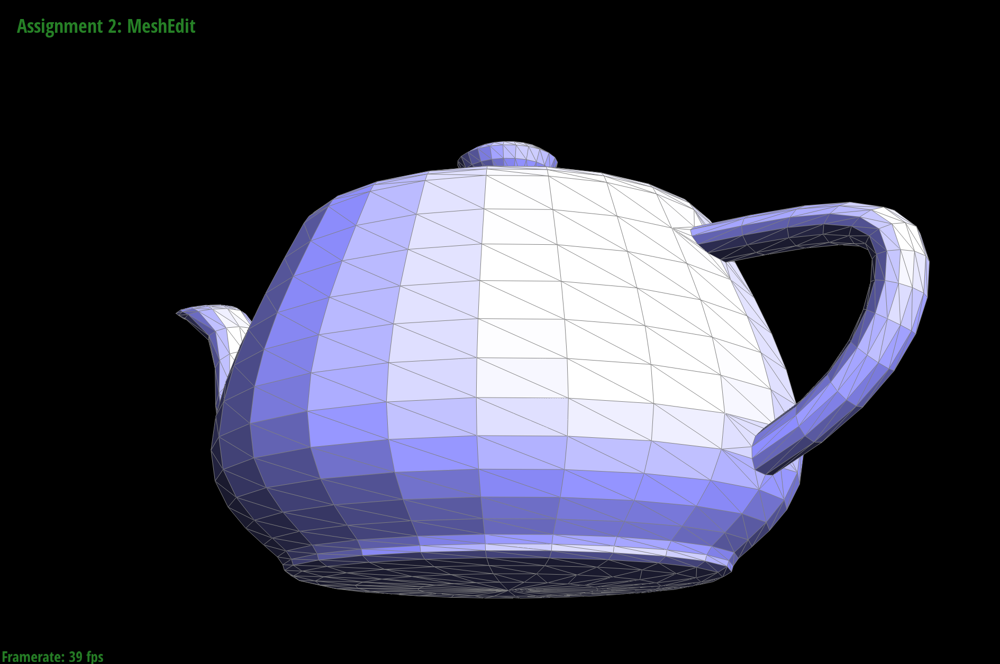 |
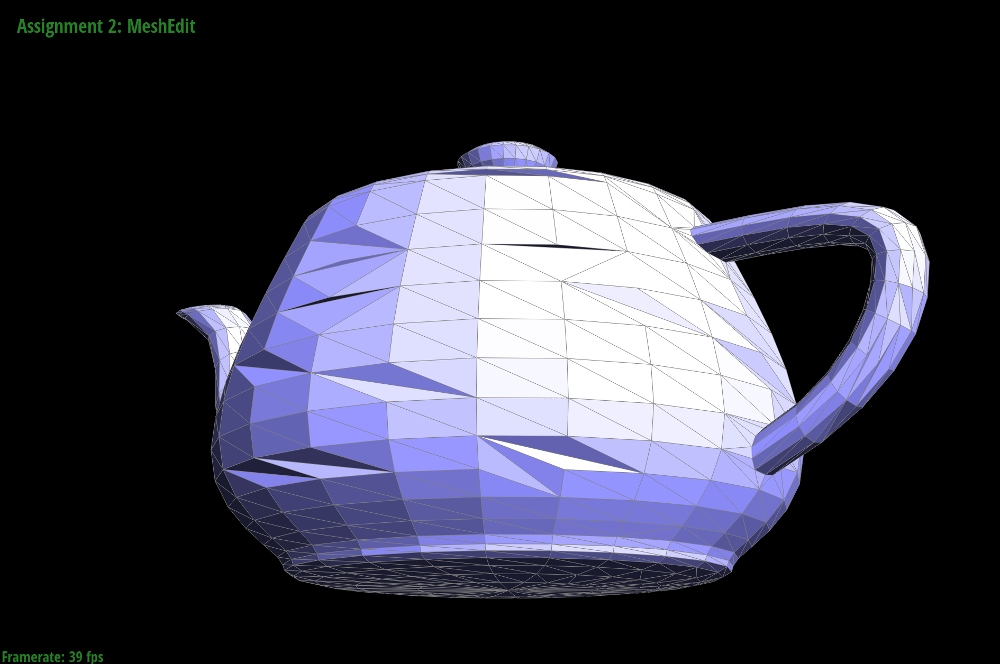 |
Part 5: Edge split
For this task, we first checked whether the edge is on the boundary. If the edge was a boundary edge, we returned the vertex of the half-edge without performing the split.
We first collected all six half-edges around the two adjacent triangles, along with their corresponding vertices and faces. Before the split, the edge connected vertices
b and c, and the two adjacent triangles were (a, b, c) and (c, b, d).
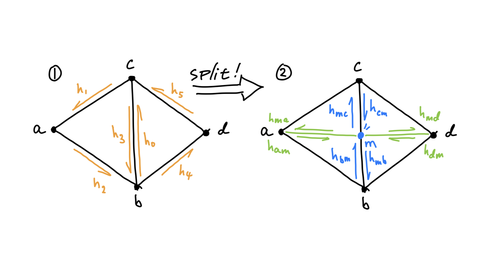
Next, we created a new vertex m at the midpoint of the edge by averaging the positions of vertices b and c. After that, we created the
necessary new mesh elements, including three new edges, two new faces, and several new half-edges.
We then reassigned the connectivity of the half-edges using setNeighbors(). The original two triangles were divided into four triangles:
(a, c, m), (c, d, m), (b, d, m),
and (a, b,m). Each half-edge’s next, twin, vertex, edge,
and face pointers were updated so that the mesh structure correctly reflected the new topology after the split.
Finally, we updated all local anchors to keep the mesh consistent. The function then returned the newly created vertex m,
whose half-edge points along the original split edge.
|
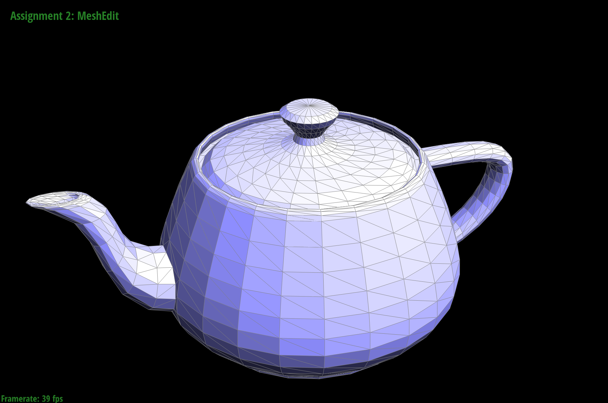 |
|
Extra Credit: Support edge splits for boundary edges
Instead of returning early when reaching a boundary edge, we have implemented logic to properly split the boundary. For a boundary edge:- Choose the ‘interior’ halfedge, which has a
face()that is not a boundary. - Insert a midpoint, m, along the boundary
- Split only the non-boundary triangle into two separate triangles.
- Use the original edge, e0, for one of the new segments.
- Create two new edges, a-m and m-c, along with their corresponding halfedges.
- Bring a new boundary halfedge into the boundary loop by connecting h3_prev to h_cm, then to h3, and finally to h3_next.
- Update the anchor halfedges for vertices, edges, and faces.
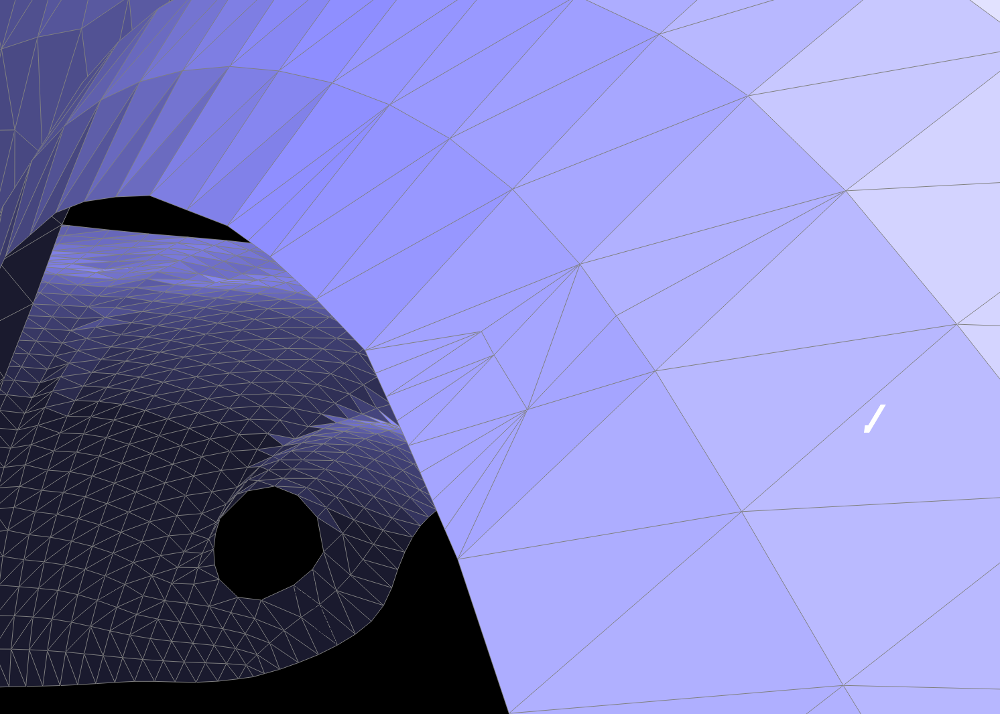
Part 6: Loop subdivision for mesh upsampling
For this task, we followed the implementation guidelines from the homework. We first computed the new positions for all original vertices using the Loop subdivision rule. First, we store all original vertices and mark them asisNew = false. we retain the boundary
verticies' original positions, while for other vertices, we compute the new position using the sum of neighboring vertices and a degree-based
weight (n = degree):
$$u = \begin{cases} \frac{3}{16} & \text{if } n = 3 \\ \frac{3}{8n} & \text{otherwise} \end{cases}$$
$$\text{newPosition} = (1 - n \cdot u) \cdot \text{position} + u \cdot \text{neighborSum}$$
Then Store all original edges and mark them as isNew = false. For boundary edges, their positions are simply the midpoint: $0.5 \cdot (b + c)$
For the rest, their position is a weighted average of the shared edge vertices ($b, c$) and the opposite adjacent vertices ($a, d$):
$$\text{newPosition} = \frac{3}{8}(b + c) + \frac{1}{8}(a + d)$$
Now that the vertices and edges are processed and stored, we iterate through all non-boundary original edges again to split them. We first assign the newly inserted
vertex its precomputed newPosition and mark it as isNew = true. These newly created "cross" edges are then marked as isNew = true,
while keeping the two halves of the original split edge as isNew = false. Once again, we iterate through all non-boundary edges in the mesh, where we only
do an edge flip if an edge is marked isNew = true and connects exactly one new vertex and one old vertex.
Finally, we iterate through all vertices once again and copy the computed newPosition into the final position.
Findings
We noticed some perculior details with loop subdivision. While the method succesffully smoothes surfaces, it tended to produce 'pinched' points, where the subdivided triangles gets closely concentracted around certain points.|
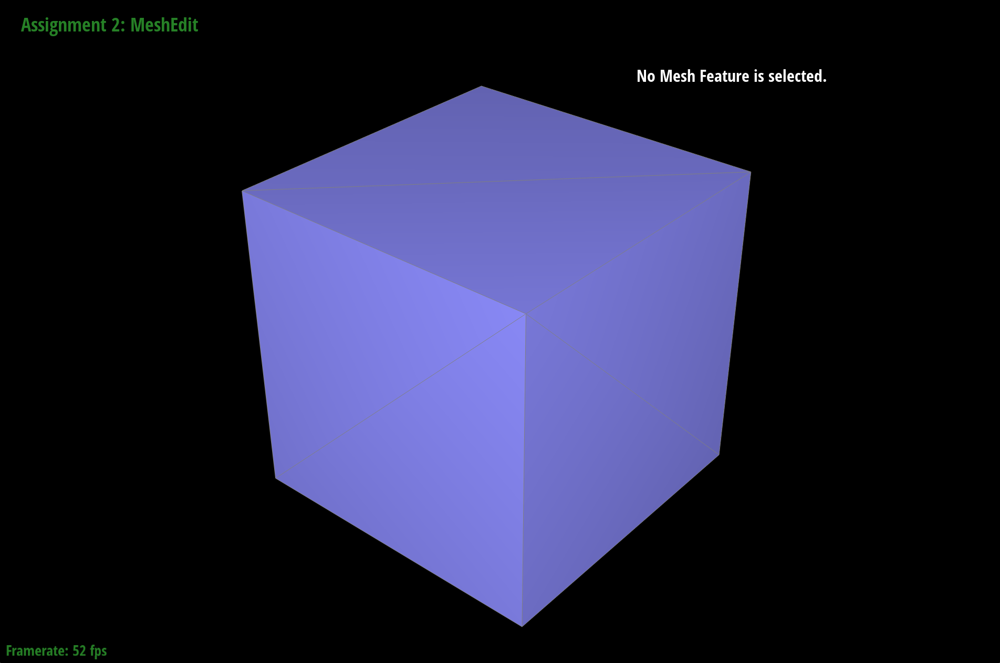 |
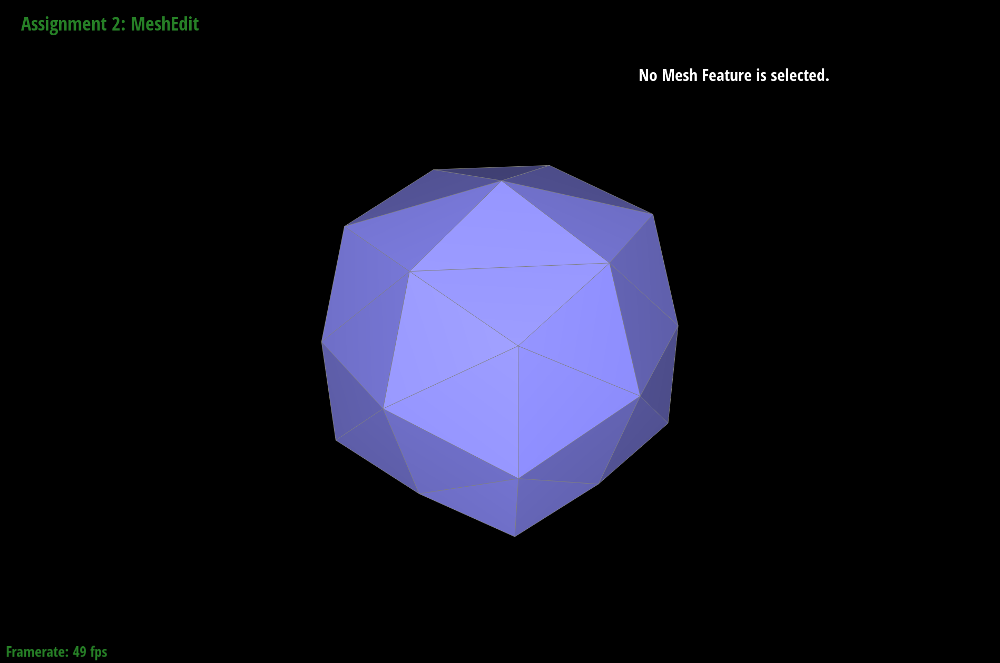 |
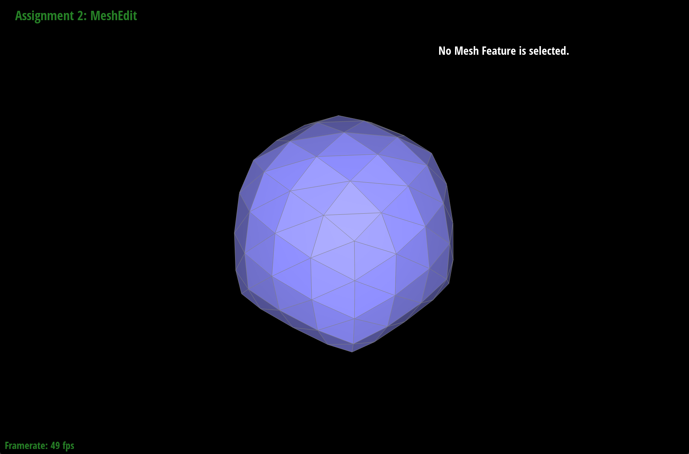 |
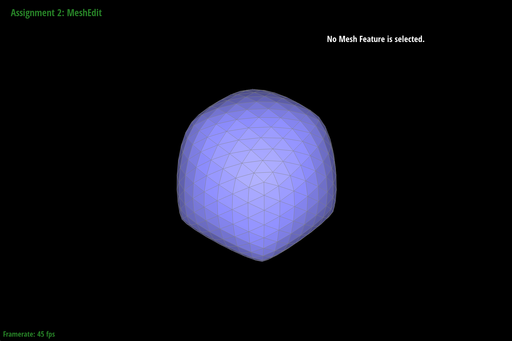 |
|
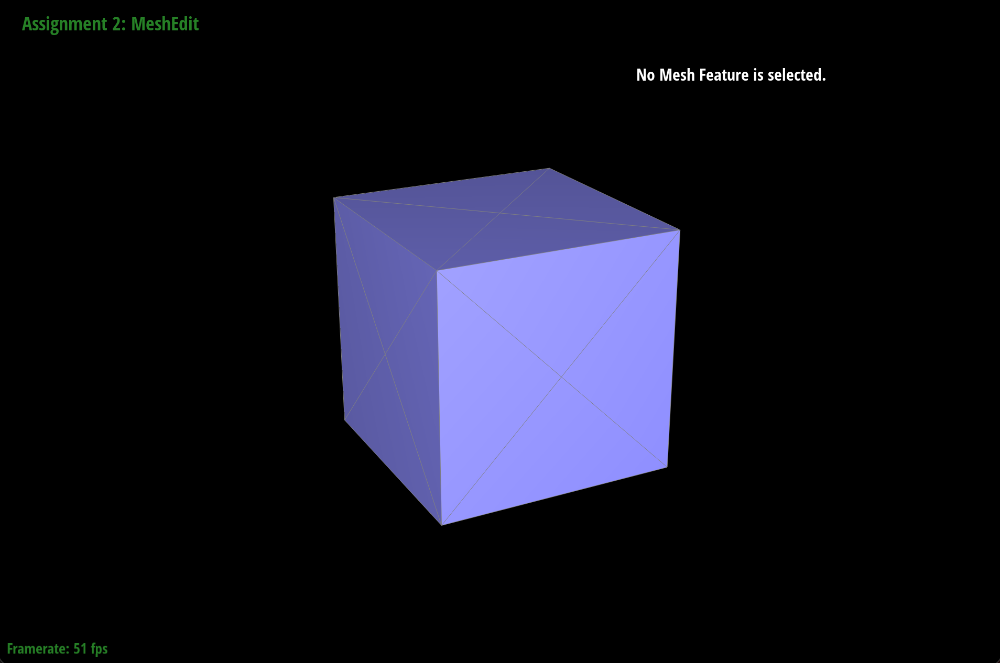 |
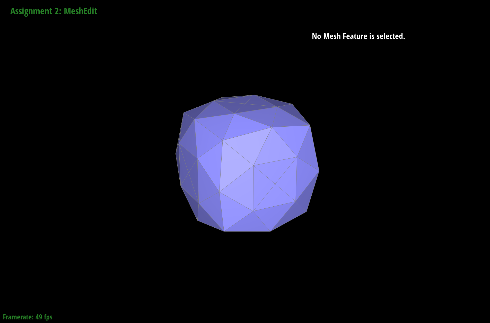 |
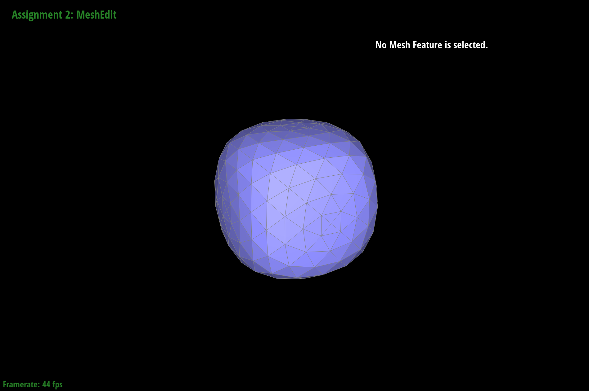 |
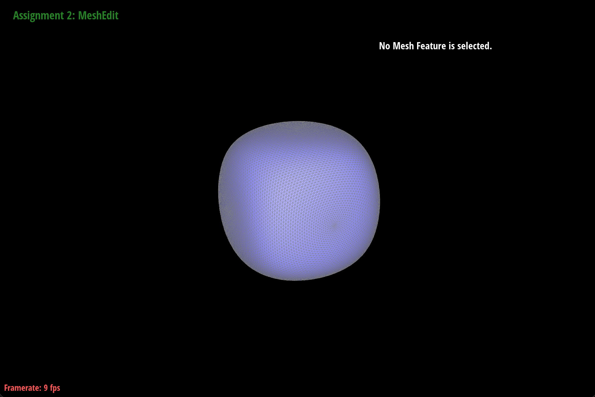 |
Extra Credit: Additional Subdivision Scheme
For this task, we implemented the \( \sqrt{3} \) Subdivision Scheme based on the method presented by Kobbelt (2000). First, we stored all original edges and vertices to ensure that our subsequent operations only affected the mesh's initial topology.
Second, we calculated the new positions for all original vertices using the \( \sqrt{3} \) weighting rules. First, we determined the weight \( \alpha_n \) based on the vertex degree \( n \) using the formula:
\[ \alpha_n = \frac{4 - 2\cos\!\left(\frac{2\pi}{n}\right)}{9} \]
We then used \( \alpha_n \) to compute the precomputed newPosition by blending the original vertex \( v \)
with the sum of its neighboring vertices:
This result was temporarily stored in Vertex::newPosition.
After calculating the new vertex positions, we split every original face by inserting a new vertex at its centroid.
We built a helper function splitFace(f), which labels all vertices and half-edges in the current face
f, creates a new centroid vertex positioned at the average of the face's vertices
and uses setNeighbors to connect the new geometry. This effectively splits the original face into three smaller triangles.
Once the new centroid vertices and faces were fully integrated, we flipped all of the original edges to complete the
\( \sqrt{3} \) topological rotation and improve the triangulation. Lastly, we finalized the geometry by copying the
precomputed values stored in Vertex::newPosition into the active Vertex::position for all original vertices.
Comparing the two techniques, we see that the \( \sqrt{3} \) subdivision rule handles irregular topologies much better, although some unevenness still exists.
|
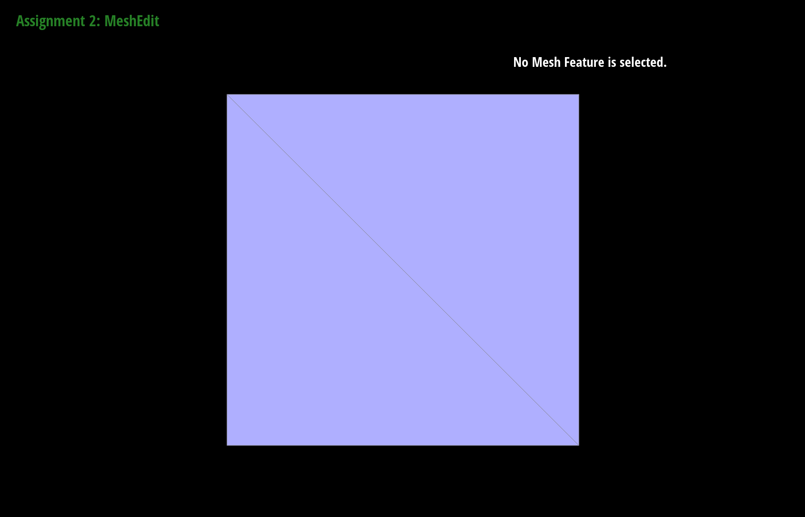 |
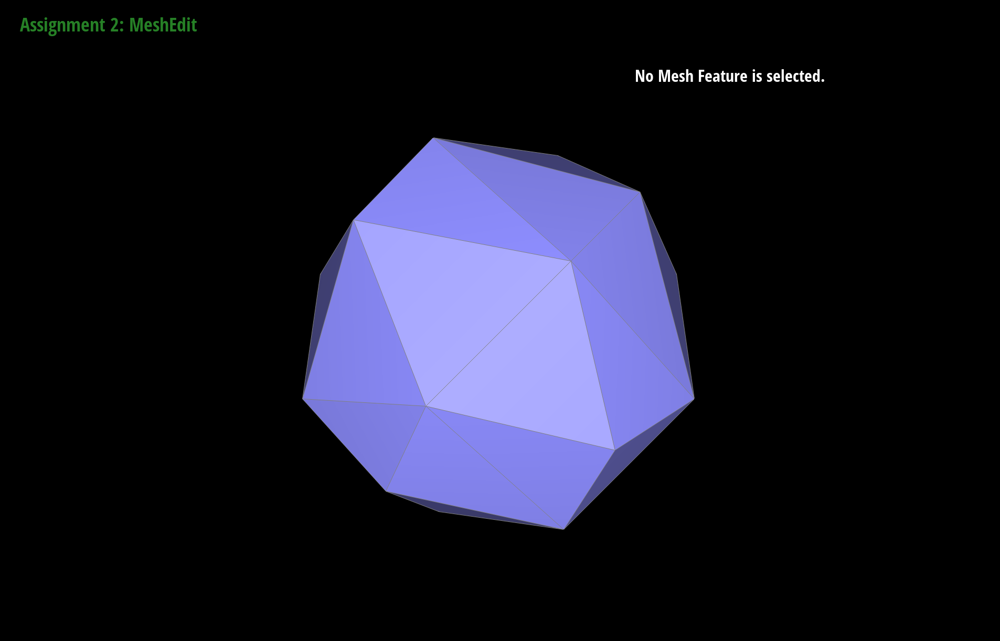 |
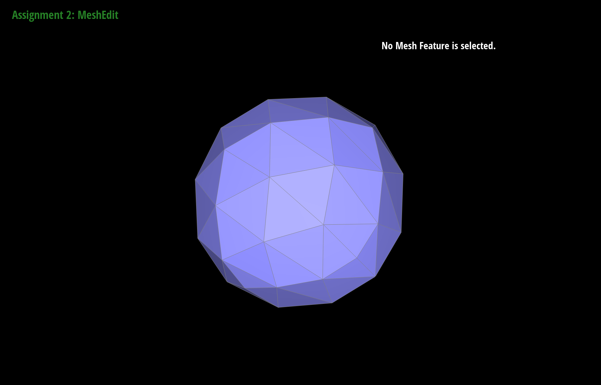 |
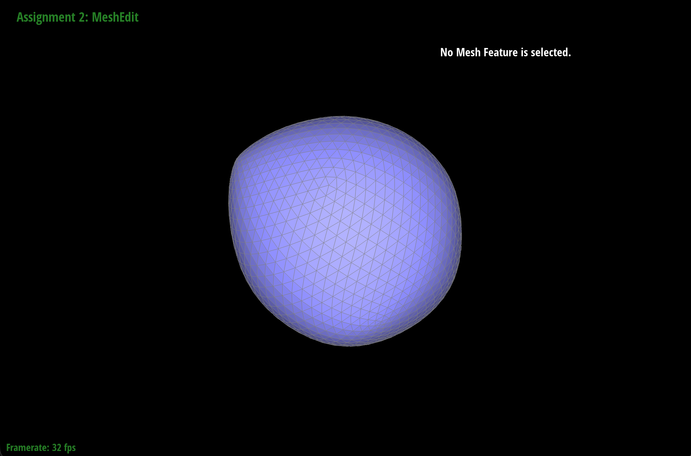 |